Natyoga Darshanam
The body is a temple.
The movement is a prayer.
The dancer is a channel of expression.
Integrative movement discipline: Preservation, education, research, and the collective upliftment of the artistic community beyond race.
NYD is a transformative approach that trains the nervous system, refines expressive depth, and restores joy in artistic embodiment.Uniting the Ancient sciences, a profound teaching methodology rooted from two foundational texts: Yogasutra of Sage Patanjali and the Natyashastra of Bharatamuni.
As the first in her bloodline to pursue Bharatanatyam, her journey has been shaped by deep dedication and divine grace & the blessings of her Guru. Trained intensively under the renowned Dr. Smt. Sheela Unnikrishnan at Sridevi Nrithyalaya in Melattur Bani Bharatanatyam, Rajadarshini has been a part of over 300 production performances, captivating audiences worldwide with her grace, precision, and profound understanding of classical Indian dance traditions.
Rajadarshini Saravanan is an internationally acclaimed Bharatanatyam dancer, yoga practitioner, movement researcher, and educator, with over two decades of rigorous training and performance experience, and more than ten years of teaching across India, Europe, Asia, the UAE, the United Kingdom, the USA, and East Africa.
Read more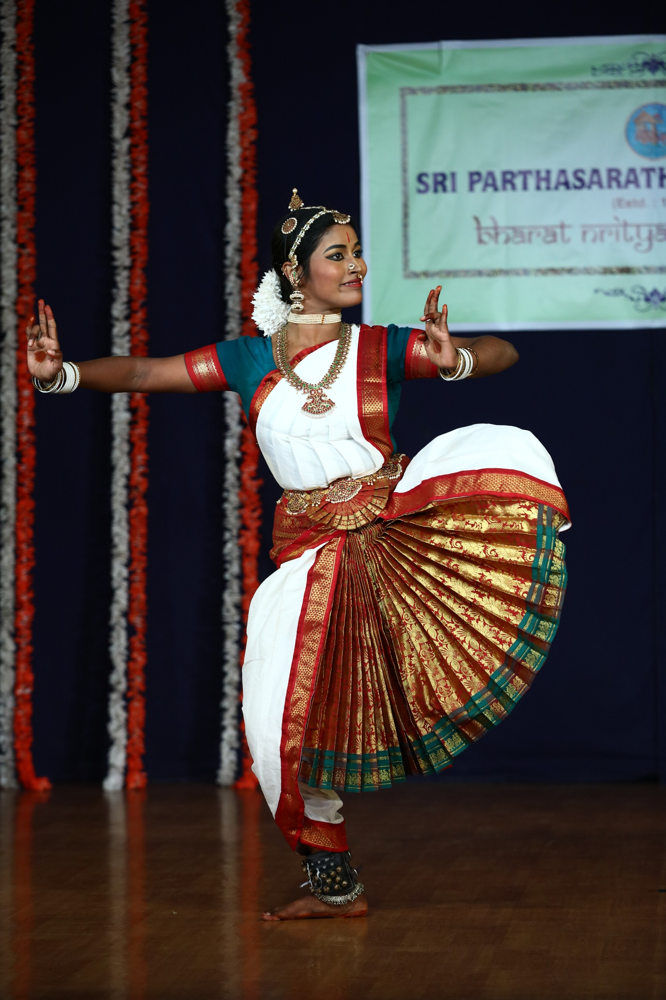
Choose a collection to explore stage work, teaching immersions, and the spaces that hold the practice.
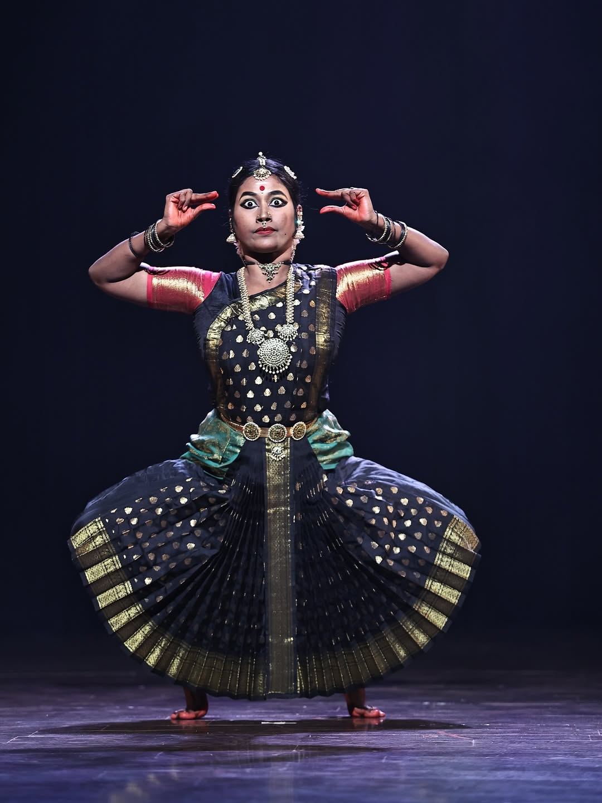
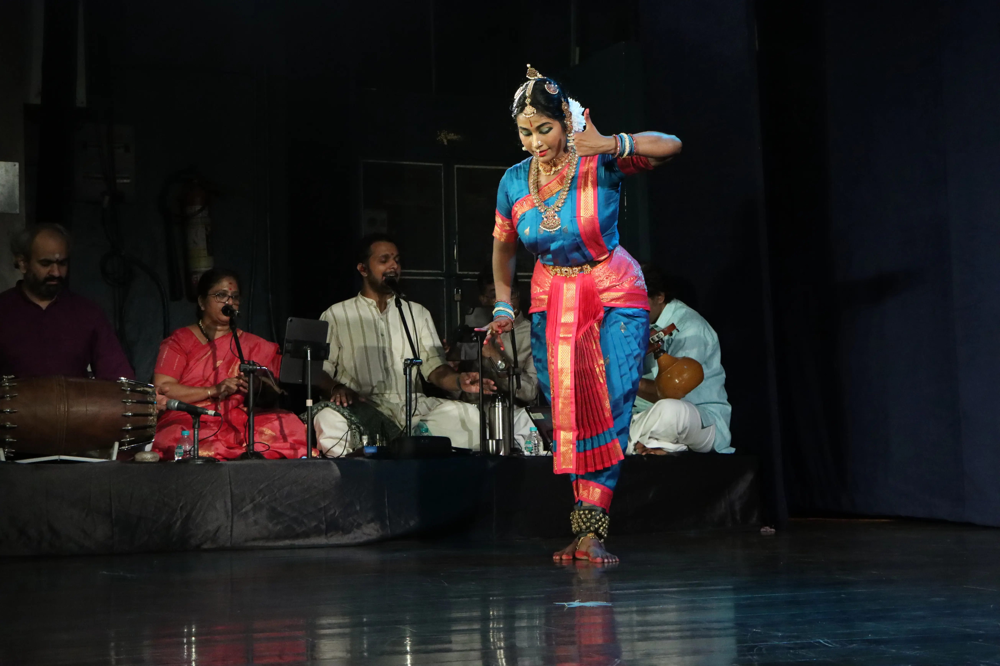
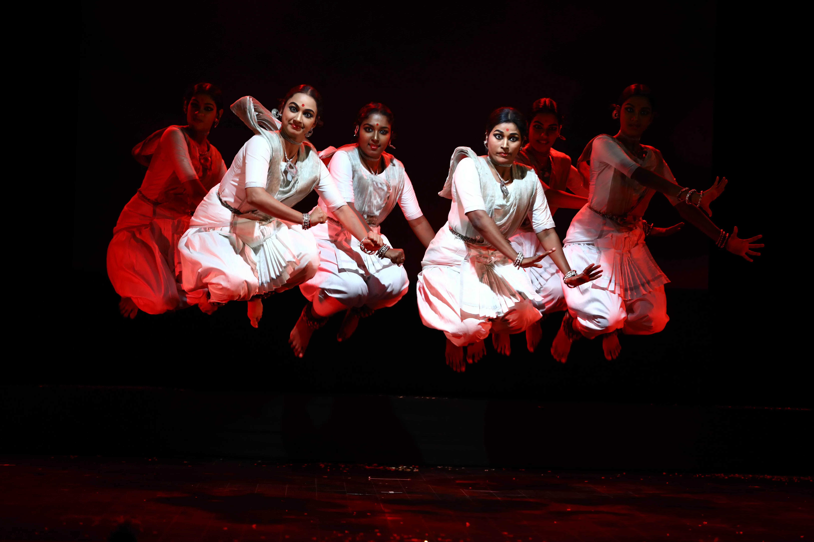
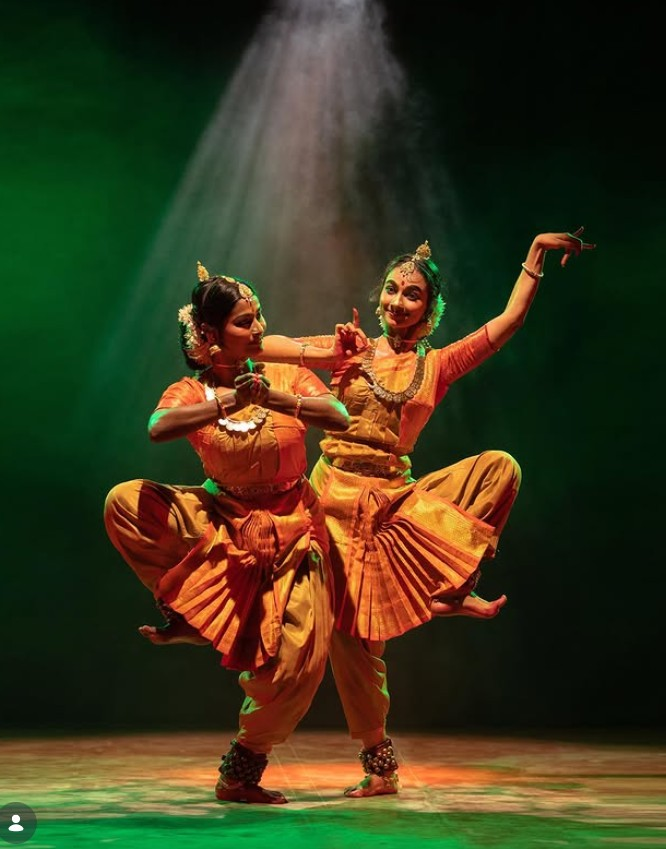
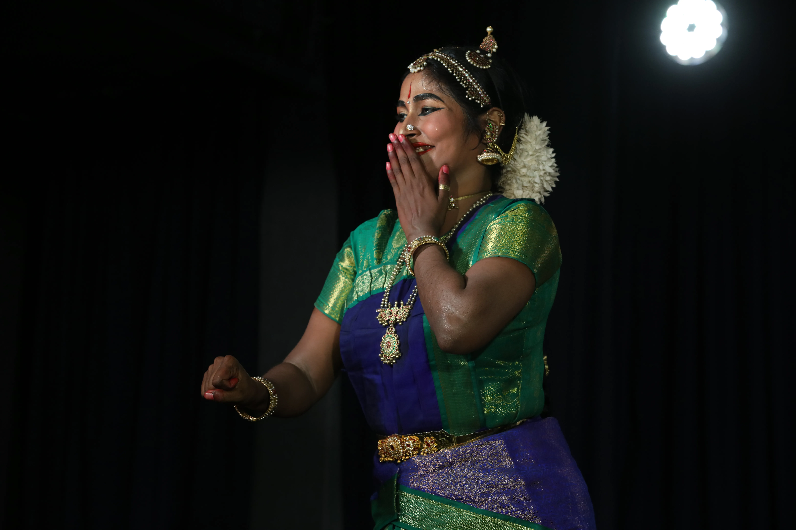
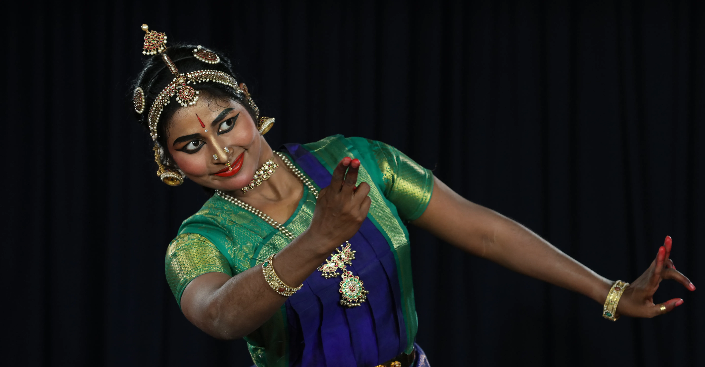
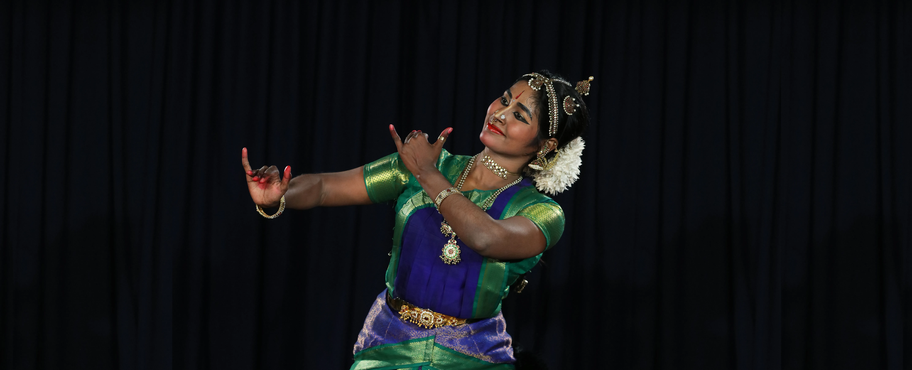
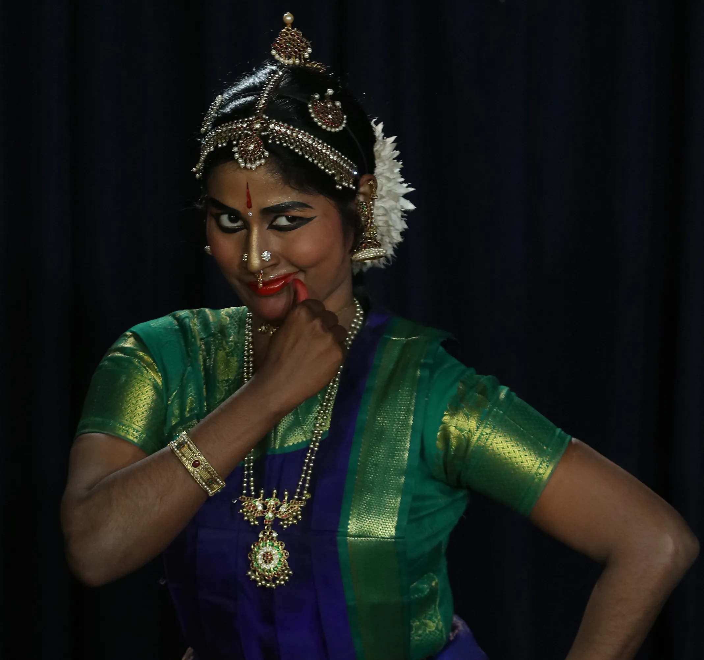
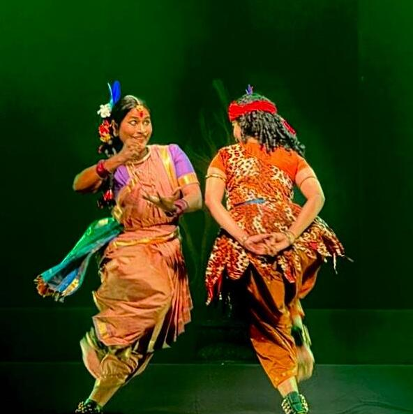
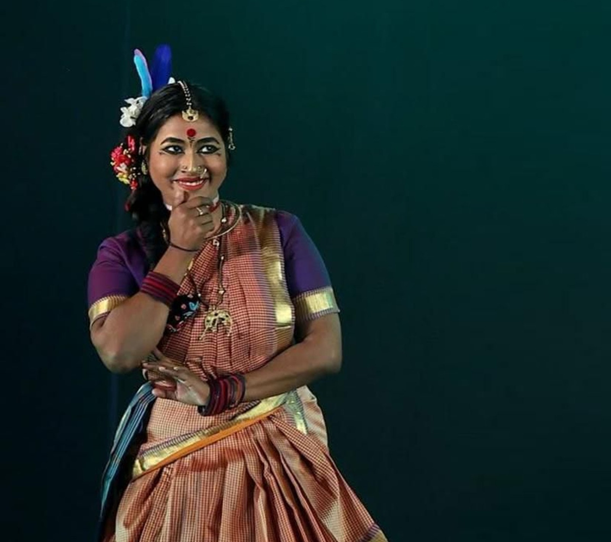
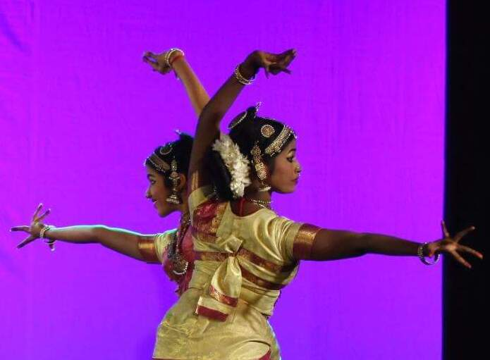


The Yogashilpa course, as part of the Natyoga series, has been a truly transformative journey. It beautifully bridges classical dance and yogic awareness, deepening both body alignment and inner stillness. Each session refined my technique while strengthening my breath and stage presence. The clarity, structure, and spiritual depth of the teaching are exceptional. Grateful for this enriching and grounding experience.

Rajadarshini’s approach to injury prevention and rehabilitation through yoga is deeply intuitive, structured and artist-specific. I’ve experienced improved strength, body awareness, and safer movement patterns in a short time. It doesn’t just focus on recovery, but on long-term resilience.

The Arangetram Pre-Performance Mentorship - Natyoga Lessons has been a powerful support for my students. It strengthens not just technique, but mental focus and stage confidence. I’ve seen remarkable improvement in their presence and emotional depth before performance. The guidance is structured, practical, and rooted in authentic values. A truly valuable mentorship for every serious Arangetram aspirant.

She brings a kind and reflective perspective with a sharp esthetic sense. She has a gift for seeing potential and helps us exceed our own limits, consistently producing top tier work under tight deadlines. A complete body mind and breathing workout. We are happy to learn from her

I feel fortunate to have a teacher who has guided me in both dance and yoga. She understands my strengths and weaknesses, encourages me constantly, and never judges when I falter. In fact, she cares enough to get upset when I skip classes with my endless excuses — which says a lot about her commitment to her students. I truly admire how she has evolved so beautifully from being a dancer and architect into a yoga teacher who looks at growth in such a holistic way. Learning from her has been a blessing. 🙏✨

The regular weekly Yoga sessions have been a transformative addition to my journey as an Indian classical dance teacher and performing artist. Through your structured and disciplined approach, I experienced remarkable improvement in alignment, breath control and core stability. Integrating these principles into my dance training has elevated both techniques and endurance in my students. The practice beautifully bridges traditional movement with modern body awareness. Beyond physical benefits, it has helped me with mental clarity. I strongly recommend this Yoga program to performing artists worldwide seeking holistic excellence.
Contact Us
For training programmes, workshops, retreats, certification courses, performance bookings, or research enquiries, reach out. You'll receive a personalised response with available slots and next steps.